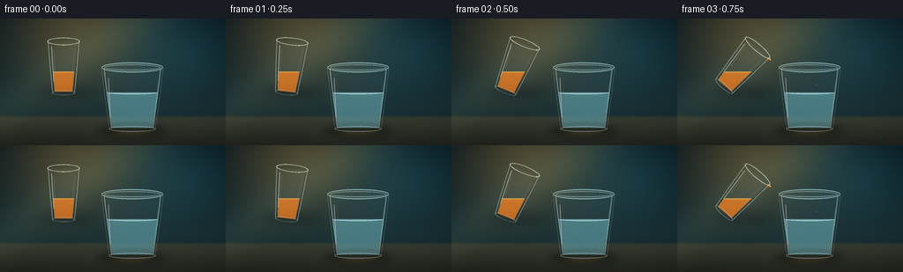
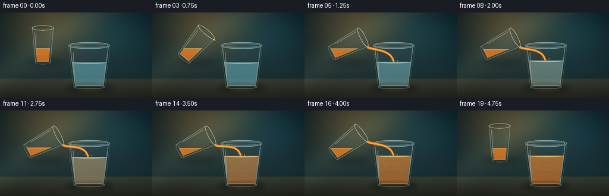
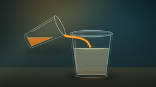
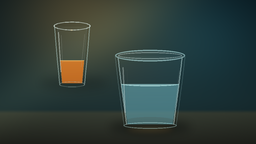
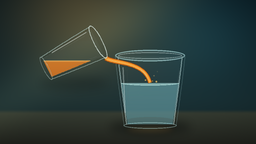
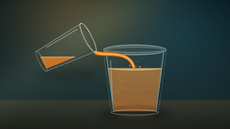
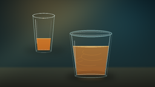

CODING AGENTS AS PIXEL WORLD MODELS
traex/DeepSeek-V4.1-Flash · phygen_139
点击播放 · 原生 RGB 像素
逐轮保存的候选
回放视频、检查图与代码变化。
每份候选均可单独播放。实际图片检查记录在下方工具轨迹中。
候选 01播放与检查图
点击播放 · 原生 RGB 像素

展开代码变化
--- 上一保存版本
+++ 本次保存版本
@@ -0,0 +1,579 @@
+from pathlib import Path
+import math
+
+import numpy as np
+from PIL import Image, ImageChops, ImageDraw, ImageFilter
+
+import artifact_io
+
+
+WIDTH = 256
+HEIGHT = 144
+FRAMES = 20
+FPS = 4.0
+SCALE = 4
+WW = WIDTH * SCALE
+HH = HEIGHT * SCALE
+CASE_DIR = Path(__file__).resolve().parent
+
+
+def clamp(value, low=0.0, high=1.0):
+ return np.clip(value, low, high)
+
+
+def smoothstep(edge0, edge1, value):
+ t = clamp((value - edge0) / (edge1 - edge0))
+ return t * t * (3.0 - 2.0 * t)
+
+
+def mix_color(a, b, t):
+ return tuple(round(a[i] + (b[i] - a[i]) * t) for i in range(3))
+
+
+def pts(points):
+ return [(round(x * SCALE), round(y * SCALE)) for x, y in points]
+
+
+def line(draw, points, fill, width=1.0, joint="curve"):
+ draw.line(pts(points), fill=fill, width=max(1, round(width * SCALE)), joint=joint)
+
+
+def ellipse(draw, box, fill=None, outline=None, width=1.0):
+ draw.ellipse(
+ tuple(round(v * SCALE) for v in box),
+ fill=fill,
+ outline=outline,
+ width=max(1, round(width * SCALE)) if outline is not None else 0,
+ )
+
+
+def polygon(draw, points, fill=None, outline=None, width=1.0):
+ draw.polygon(
+ pts(points),
+ fill=fill,
+ outline=outline,
+ width=max(1, round(width * SCALE)) if outline is not None else 0,
+ )
+
+
+def tapered_body(cx, y_top, y_bottom, top_rx, bottom_rx, bow=0.45, steps=50):
+ right = []
+ for index in range(steps + 1):
+ v = index / steps
+ half = bottom_rx + (top_rx - bottom_rx) * ((1.0 - v) ** 1.08)
+ half += bow * math.sin(math.pi * v)
+ right.append((cx + half, y_top + (y_bottom - y_top) * v))
+ left = [(2 * cx - x, y) for x, y in reversed(right)]
+ return right + left
+
+
+def half_width_at(cx, y, y_top, y_bottom, top_rx, bottom_rx, bow=0.45):
+ v = clamp((y - y_top) / (y_bottom - y_top))
+ half = bottom_rx + (top_rx - bottom_rx) * ((1.0 - v) ** 1.08)
+ return half + bow * math.sin(math.pi * v)
+
+
+def rotate_points(points, angle, center):
+ ca, sa = math.cos(angle), math.sin(angle)
+ cx, cy = center
+ return [
+ (cx + x * ca - y * sa, cy + x * sa + y * ca)
+ for x, y in points
+ ]
+
+
+def alpha_mask_polygon(points):
+ mask = Image.new("L", (WW, HH), 0)
+ ImageDraw.Draw(mask).polygon(pts(points), fill=255)
+ return mask
+
+
+def vertical_gradient(top_color, bottom_color, top_alpha, bottom_alpha):
+ y = np.linspace(0.0, 1.0, HH, dtype=np.float32)[:, None, None]
+ top = np.array([*top_color, top_alpha], dtype=np.float32)[None, None, :]
+ bottom = np.array([*bottom_color, bottom_alpha], dtype=np.float32)[None, None, :]
+ row = top * (1.0 - y) + bottom * y
+ return np.repeat(row, WW, axis=1).astype(np.uint8)
+
+
+def make_background():
+ yy, xx = np.mgrid[0:HH, 0:WW].astype(np.float32)
+ xn = xx / (WW - 1)
+ yn = yy / (HH - 1)
+
+ top = np.array([10, 27, 34], dtype=np.float32)
+ middle = np.array([25, 47, 51], dtype=np.float32)
+ low = np.array([18, 31, 35], dtype=np.float32)
+ blend = np.clip(yn / 0.76, 0.0, 1.0)[..., None]
+ background = top * (1.0 - blend) + middle * blend
+ background = background * (1.0 - 0.24 * smoothstep(0.66, 1.0, yn)[..., None])
+ background += (low - background) * 0.22 * smoothstep(0.72, 1.0, yn)[..., None]
+
+ warm_distance = ((xn - 0.33) * 1.32) ** 2 + ((yn - 0.08) * 0.90) ** 2
+ warm = np.exp(-warm_distance * 6.3)[..., None]
+ background += warm * np.array([65, 43, 15], dtype=np.float32)
+
+ cool_distance = ((xn - 0.78) * 1.65) ** 2 + ((yn - 0.22) * 1.20) ** 2
+ cool = np.exp(-cool_distance * 5.0)[..., None]
+ background += cool * np.array([8, 24, 28], dtype=np.float32)
+
+ table_start = 109.0 / HEIGHT
+ table_t = np.clip((yn - table_start) / (1.0 - table_start), 0.0, 1.0)[..., None]
+ table_top = np.array([39, 54, 52], dtype=np.float32)
+ table_bottom = np.array([17, 27, 30], dtype=np.float32)
+ table = table_top * (1.0 - table_t) + table_bottom * table_t
+ table += np.exp(-(((xn - 0.58) * 1.7) ** 2 + ((yn - 0.92) * 2.8) ** 2) * 3.5)[..., None]
+ table += np.array([18, 10, 1], dtype=np.float32)
+ table_weight = smoothstep(table_start, table_start + 0.035, yn)[..., None]
+ background = background * (1.0 - table_weight) + table * table_weight
+
+ vignette = np.clip(((xn - 0.5) / 0.72) ** 2 + ((yn - 0.46) / 0.80) ** 2, 0.0, 1.0)
+ background *= (1.0 - 0.20 * vignette[..., None])
+
+ # A very soft diagonal studio-light wash.
+ beam_coord = xn * 0.88 + yn * 0.72
+ beam = np.exp(-((beam_coord - 0.53) ** 2) * 38.0)[..., None]
+ background += beam * np.array([13, 14, 10], dtype=np.float32)
+
+ return Image.fromarray(np.clip(background, 0, 255).astype(np.uint8), "RGB").convert("RGBA")
+
+
+def add_soft_shadows(base):
+ layer = Image.new("RGBA", (WW, HH), (0, 0, 0, 0))
+ draw = ImageDraw.Draw(layer)
+ ellipse(draw, (110, 121, 190, 133), fill=(3, 8, 9, 125))
+ ellipse(draw, (117, 124, 183, 132), fill=(2, 6, 7, 95))
+ ellipse(draw, (40, 77, 107, 89), fill=(4, 9, 10, 55))
+ layer = layer.filter(ImageFilter.GaussianBlur(4.5 * SCALE))
+ base.alpha_composite(layer)
+
+ glow = Image.new("RGBA", (WW, HH), (0, 0, 0, 0))
+ draw = ImageDraw.Draw(glow)
+ ellipse(draw, (125, 126, 175, 133), fill=(245, 155, 50, 55))
+ ellipse(draw, (132, 127, 164, 131), fill=(255, 197, 94, 42))
+ glow = glow.filter(ImageFilter.GaussianBlur(3.2 * SCALE))
+ base.alpha_composite(glow)
+ return base
+
+
+def draw_receiving_glass(base, surface_y, mix, frame):
+ cx = 150.0
+ rim_y = 55.5
+ bottom_y = 126.0
+ outer = tapered_body(cx, rim_y, bottom_y, 35.0, 26.0, bow=0.55)
+ inner = tapered_body(cx, rim_y + 1.1, bottom_y - 1.5, 32.0, 23.4, bow=0.42)
+ inner_mask = alpha_mask_polygon(inner)
+
+ # The transparent body picks up a cool edge and a faint tint.
+ body_np = vertical_gradient((176, 222, 224), (126, 182, 190), 9, 18)
+ body = Image.fromarray(body_np, "RGBA")
+ body.putalpha(ImageChops.multiply(body.getchannel("A"), inner_mask))
+ base.alpha_composite(body)
+
+ liquid_top = mix_color((136, 204, 212), (246, 166, 56), mix)
+ liquid_bottom = mix_color((86, 151, 163), (179, 86, 25), mix)
+ liquid_alpha_top = round(128 + 54 * mix)
+ liquid_alpha_bottom = round(158 + 45 * mix)
+ liquid_poly = tapered_body(
+ cx,
+ surface_y,
+ bottom_y - 2.0,
+ half_width_at(cx, surface_y, rim_y + 1.1, bottom_y - 1.5, 32.0, 23.4, 0.42),
+ 22.5,
+ bow=0.20,
+ )
+ liquid_mask = alpha_mask_polygon(liquid_poly)
+ liquid_np = vertical_gradient(
+ liquid_top, liquid_bottom, liquid_alpha_top, liquid_alpha_bottom
+ )
+ liquid = Image.fromarray(liquid_np, "RGBA")
+ liquid.putalpha(ImageChops.multiply(liquid.getchannel("A"), liquid_mask))
+ base.alpha_composite(liquid)
+
+ # Darker refracted base and a bright, thin meniscus keep the liquid readable.
+ base_detail = Image.new("RGBA", (WW, HH), (0, 0, 0, 0))
+ draw = ImageDraw.Draw(base_detail)
+ ellipse(
+ draw,
+ (cx - 24, bottom_y - 9, cx + 24, bottom_y - 2),
+ fill=(70, 41, 18, round(28 + 22 * mix)),
+ )
+ half_surface = half_width_at(
+ cx, surface_y, rim_y + 1.1, bottom_y - 1.5, 32.0, 23.4, 0.42
+ )
+ surface_color = mix_color((190, 239, 237), (255, 212, 119), mix)
+ ellipse(
+ draw,
+ (cx - half_surface, surface_y - 2.1, cx + half_surface, surface_y + 2.1),
+ fill=(*surface_color, round(80 + 45 * mix)),
+ outline=(*surface_color, 205),
+ width=0.75,
+ )
+ ellipse(
+ draw,
+ (cx - half_surface + 3, surface_y - 0.6, cx + half_surface - 3, surface_y + 1.0),
+ outline=(235, 250, 244, 85),
+ width=0.45,
+ )
+ base_detail.putalpha(ImageChops.multiply(base_detail.getchannel("A"), liquid_mask))
+ base.alpha_composite(base_detail)
+
+ if mix > 0.02:
+ swirls = Image.new("RGBA", (WW, HH), (0, 0, 0, 0))
+ draw = ImageDraw.Draw(swirls)
+ for index in range(4):
+ phase = frame * 0.36 + index * 1.65
+ cy = surface_y + 10 + index * 7.5
+ rx = 16 + index * 3.2
+ ry = 5.5 + index * 1.2
+ shift = 4.0 * math.sin(phase)
+ color = (255, 171, 66, round(42 * mix))
+ draw.arc(
+ (
+ round((cx - rx + shift) * SCALE),
+ round((cy - ry) * SCALE),
+ round((cx + rx + shift) * SCALE),
+ round((cy + ry) * SCALE),
+ ),
+ start=18 + index * 21,
+ end=212 + index * 11,
+ fill=color,
+ width=max(1, round(0.75 * SCALE)),
+ )
+ alpha = ImageChops.multiply(swirls.getchannel("A"), liquid_mask)
+ swirls.putalpha(alpha)
+ base.alpha_composite(swirls)
+
+ # Rim and glass thickness.
+ glass = Image.new("RGBA", (WW, HH), (0, 0, 0, 0))
+ draw = ImageDraw.Draw(glass)
+ ellipse(
+ draw,
+ (cx - 35, rim_y - 5.8, cx + 35, rim_y + 5.8),
+ fill=(181, 226, 229, 18),
+ outline=(183, 228, 229, 155),
+ width=1.25,
+ )
+ ellipse(
+ draw,
+ (cx - 31.8, rim_y - 3.2, cx + 31.8, rim_y + 3.2),
+ outline=(231, 252, 249, 120),
+ width=0.70,
+ )
+ line(draw, inner[:51], (207, 239, 237, 130), 1.05)
+ line(draw, inner[51:], (205, 238, 236, 130), 1.05)
+ line(draw, outer[:51], (169, 213, 216, 52), 0.65)
+ line(draw, outer[51:], (176, 220, 222, 56), 0.65)
+ ellipse(
+ draw,
+ (cx - 26.5, bottom_y - 3.8, cx + 26.5, bottom_y + 2.4),
+ outline=(186, 228, 227, 125),
+ width=0.85,
+ )
+
+ # Long specular reflections make the tumbler read as polished glass.
+ highlight = Image.new("RGBA", (WW, HH), (0, 0, 0, 0))
+ hdraw = ImageDraw.Draw(highlight)
+ line(hdraw, [(cx - 27.2, 67), (cx - 25.0, 113)], (239, 255, 251, 100), 1.4)
+ line(hdraw, [(cx - 23.2, 69), (cx - 21.8, 105)], (244, 255, 252, 42), 0.55)
+ line(hdraw, [(cx + 29.6, 70), (cx + 24.5, 108)], (221, 248, 246, 74), 0.65)
+ highlight = highlight.filter(ImageFilter.GaussianBlur(0.35 * SCALE))
+ glass.alpha_composite(highlight)
+ base.alpha_composite(glass)
+
+ # Small expanding ripples at the point where the stream enters the liquid.
+ if mix > 0.01:
+ ripples = Image.new("RGBA", (WW, HH), (0, 0, 0, 0))
+ draw = ImageDraw.Draw(ripples)
+ for index in range(2):
+ phase = (frame * 0.43 + index * 0.5) % 1.0
+ rx = 4.0 + phase * 17.0
+ ry = 0.9 + phase * 2.5
+ alpha = round(115 * (1.0 - phase) * mix)
+ ellipse(
+ draw,
+ (cx - rx, surface_y - ry, cx + rx, surface_y + ry),
+ outline=(255, 232, 173, alpha),
+ width=0.60,
+ )
+ ripples.putalpha(ImageChops.multiply(ripples.getchannel("A"), liquid_mask))
+ base.alpha_composite(ripples)
+
+
+def source_geometry(tilt_deg, surface_y):
+ center = (72.0, 55.0)
+ angle = math.radians(tilt_deg)
+ outer_local = tapered_body(0.0, -30.0, 30.0, 17.5, 12.2, bow=0.38)
+ inner_local = tapered_body(0.0, -28.4, 28.0, 14.5, 10.0, bow=0.28)
+ outer = rotate_points(outer_local, angle, center)
+ inner = rotate_points(inner_local, angle, center)
+
+ rim_local = []
+ for index in range(65):
+ a = 2.0 * math.pi * index / 64
+ rim_local.append((18.0 * math.cos(a), -29.1 + 4.1 * math.sin(a)))
+ rim = rotate_points(rim_local, angle, center)
+
+ bottom_local = []
+ for index in range(41):
+ a = 2.0 * math.pi * index / 40
+ bottom_local.append((12.6 * math.cos(a), 29.2 + 2.6 * math.sin(a)))
+ bottom = rotate_points(bottom_local, angle, center)
+
+ inner_mask = alpha_mask_polygon(inner)
+ plane = Image.new("L", (WW, HH), 0)
+ ImageDraw.Draw(plane).rectangle(
+ (0, round(surface_y * SCALE), WW, HH), fill=255
+ )
+ liquid_mask = ImageChops.multiply(inner_mask, plane)
+
+ # The lowest point of the tilted rim is the pouring lip.
+ lip = max(rim, key=lambda point: point[1])
+ return {
+ "center": center,
+ "angle": angle,
+ "outer": outer,
+ "inner": inner,
+ "rim": rim,
+ "bottom": bottom,
+ "inner_mask": inner_mask,
+ "liquid_mask": liquid_mask,
+ "lip": lip,
+ }
+
+
+def draw_source_glass(base, tilt_deg, surface_y, juice_fraction):
+ geom = source_geometry(tilt_deg, surface_y)
+ glass = Image.new("RGBA", (WW, HH), (0, 0, 0, 0))
+ draw = ImageDraw.Draw(glass)
+
+ body_np = vertical_gradient((218, 233, 225), (156, 193, 189), 9, 16)
+ body = Image.fromarray(body_np, "RGBA")
+ body.putalpha(ImageChops.multiply(body.getchannel("A"), geom["inner_mask"]))
+ glass.alpha_composite(body)
+
+ top_color = mix_color((255, 181, 68), (242, 130, 28), 0.35)
+ bottom_color = (173, 73, 18)
+ juice_np = vertical_gradient(top_color, bottom_color, 222, 242)
+ juice = Image.fromarray(juice_np, "RGBA")
+ juice.putalpha(ImageChops.multiply(juice.getchannel("A"), geom["liquid_mask"]))
+ glass.alpha_composite(juice)
+
+ # Horizontal liquid surface, visible through the tilted glass.
+ surface = Image.new("RGBA", (WW, HH), (0, 0, 0, 0))
+ sdraw = ImageDraw.Draw(surface)
+ row_y = round(surface_y * SCALE)
+ row_mask = np.asarray(geom["liquid_mask"].crop((0, row_y, WW, min(HH, row_y + 1))))
+ xs = np.flatnonzero(row_mask[0] > 0)
+ if xs.size:
+ x0, x1 = int(xs[0]), int(xs[-1])
+ sdraw.line(
+ (x0, row_y, x1, row_y),
+ fill=(255, 212, 119, 165),
+ width=max(1, round(0.7 * SCALE)),
+ )
+ sdraw.line(
+ (x0 + 3 * SCALE, row_y + SCALE, x1 - 3 * SCALE, row_y + SCALE),
+ fill=(255, 239, 188, 70),
+ width=max(1, round(0.35 * SCALE)),
+ )
+ glass.alpha_composite(surface)
+
+ outline = Image.new("RGBA", (WW, HH), (0, 0, 0, 0))
+ odraw = ImageDraw.Draw(outline)
+ line(odraw, geom["outer"][:51], (207, 238, 230, 136), 1.0)
+ line(odraw, geom["outer"][51:], (203, 236, 229, 136), 1.0)
+ line(odraw, geom["inner"][:51], (173, 213, 207, 65), 0.55)
+ line(odraw, geom["inner"][51:], (173, 213, 207, 65), 0.55)
+ line(odraw, geom["rim"] + [geom["rim"][0]], (239, 255, 246, 185), 1.1)
+ line(odraw, geom["bottom"] + [geom["bottom"][0]], (211, 239, 231, 115), 0.65)
+
+ # Two crisp highlights follow the source glass as it tilts.
+ angle = geom["angle"]
+ center = geom["center"]
+ local_highlights = [
+ [(-13.8, -23.0), (-11.2, 17.0)],
+ [(-11.0, -20.0), (-9.7, 8.0)],
+ [(12.5, -21.0), (9.0, 12.0)],
+ ]
+ for index, local_line in enumerate(local_highlights):
+ world_line = rotate_points(local_line, angle, center)
+ color = (247, 255, 246, 130 if index == 0 else 70)
+ line(odraw, world_line, color, 1.0 if index == 0 else 0.45)
+ outline = outline.filter(ImageFilter.GaussianBlur(0.18 * SCALE))
+ glass.alpha_composite(outline)
+
+ # A warm glint at the lip ties the glass visually to the stream.
+ glint = Image.new("RGBA", (WW, HH), (0, 0, 0, 0))
+ gdraw = ImageDraw.Draw(glint)
+ lx, ly = geom["lip"]
+ ellipse(gdraw, (lx - 2.2, ly - 0.8, lx + 1.3, ly + 0.8), fill=(255, 237, 181, 145))
+ glint = glint.filter(ImageFilter.GaussianBlur(0.45 * SCALE))
+ glass.alpha_composite(glint)
+
+ base.alpha_composite(glass)
+ return geom["lip"]
+
+
+def bezier_point(p0, p1, p2, p3, t):
+ u = 1.0 - t
+ return (
+ u * u * u * p0[0]
+ + 3.0 * u * u * t * p1[0]
+ + 3.0 * u * t * t * p2[0]
+ + t * t * t * p3[0],
+ u * u * u * p0[1]
+ + 3.0 * u * u * t * p1[1]
+ + 3.0 * u * t * t * p2[1]
+ + t * t * t * p3[1],
+ )
+
+
+def draw_stream(base, start, end, progress, flow, frame):
+ if progress <= 0.012 or flow <= 0.012:
+ return
+
+ p0 = start
+ p1 = (start[0] + 7.0, start[1] + 5.5)
+ p2 = (end[0] - 5.0, end[1] - 22.0)
+ p3 = end
+ count = max(8, round(58 * progress))
+ ts = np.linspace(0.0, progress, count)
+ centers = [bezier_point(p0, p1, p2, p3, float(t)) for t in ts]
+
+ left = []
+ right = []
+ for index, (x, y) in enumerate(centers):
+ t = index / max(1, len(centers) - 1)
+ if index < len(centers) - 1:
+ nx = centers[index + 1][0] - x
+ ny = centers[index + 1][1] - y
+ else:
+ nx = x - centers[index - 1][0]
+ ny = y - centers[index - 1][1]
+ length = max(0.001, math.hypot(nx, ny))
+ ox, oy = -ny / length, nx / length
+ width = (2.55 - 0.62 * t) * (0.35 + 0.65 * clamp(flow * 1.4))
+ wobble = 0.24 * math.sin(t * 9.0 - frame * 0.35) * (1.0 - t)
+ x += ox * wobble
+ left.append((x + ox * width, y + oy * width))
+ right.append((x - ox * width, y - oy * width))
+
+ stream = Image.new("RGBA", (WW, HH), (0, 0, 0, 0))
+ draw = ImageDraw.Draw(stream)
+ outer_poly = left + list(reversed(right))
+ polygon(draw, outer_poly, fill=(194, 91, 20, 215))
+
+ inner_left = []
+ inner_right = []
+ for index, (x, y) in enumerate(centers):
+ t = index / max(1, len(centers) - 1)
+ if index < len(centers) - 1:
+ nx = centers[index + 1][0] - x
+ ny = centers[index + 1][1] - y
+ else:
+ nx = x - centers[index - 1][0]
+ ny = y - centers[index - 1][1]
+ length = max(0.001, math.hypot(nx, ny))
+ ox, oy = -ny / length, nx / length
+ width = (1.55 - 0.35 * t) * (0.25 + 0.75 * clamp(flow * 1.4))
+ inner_left.append((x + ox * width, y + oy * width))
+ inner_right.append((x - ox * width, y - oy * width))
+ polygon(draw, inner_left + list(reversed(inner_right)), fill=(250, 157, 45, 255))
+
+ shine = [(x - 0.35, y) for x, y in centers[1:-1]]
+ if len(shine) >= 2:
+ line(draw, shine, (255, 226, 154, 210), 0.45)
+
+ stream = stream.filter(ImageFilter.GaussianBlur(0.16 * SCALE))
+ base.alpha_composite(stream)
+
+ if progress > 0.93 and flow > 0.20:
+ splash = Image.new("RGBA", (WW, HH), (0, 0, 0, 0))
+ draw = ImageDraw.Draw(splash)
+ phase = frame * 0.65
+ for index in range(3):
+ dx = (-1) ** index * (2.6 + index * 1.9)
+ dy = -1.8 - (index % 2) * 1.5 - 0.7 * math.sin(phase + index)
+ radius = 0.65 + 0.18 * index
+ ellipse(
+ draw,
+ (end[0] + dx - radius, end[1] + dy - radius,
+ end[0] + dx + radius, end[1] + dy + radius),
+ fill=(255, 210, 117, round(180 * flow)),
+ )
+ splash = splash.filter(ImageFilter.GaussianBlur(0.25 * SCALE))
+ base.alpha_composite(splash)
+
+
+def add_reflection(base):
+ # A restrained reflection on the table, clipped to the lower edge of frame.
+ region = base.crop((0, round(82 * SCALE), WW, round(127 * SCALE)))
+ reflection = region.transpose(Image.Transpose.FLIP_TOP_BOTTOM)
+ reflection = reflection.filter(ImageFilter.GaussianBlur(1.5 * SCALE))
+ alpha = reflection.getchannel("A").point(lambda value: round(value * 0.11))
+ reflection.putalpha(alpha)
+ mask = Image.new("L", (WW, HH), 0)
+ ImageDraw.Draw(mask).rectangle(
+ (0, round(127 * SCALE), WW, HH), fill=255
+ )
+ reflection.putalpha(ImageChops.multiply(reflection.getchannel("A"), mask))
+ base.alpha_composite(reflection, (0, round(127 * SCALE)))
+
+
+def render_frame(frame):
+ image = make_background()
+ image = add_soft_shadows(image)
+
+ tilt_deg = 0.0
+ if frame <= 5:
+ tilt_deg = 63.0 * smoothstep(0.0, 5.0, frame)
+ elif frame <= 15:
+ tilt_deg = 63.0
+ else:
+ tilt_deg = 63.0 * (1.0 - smoothstep(15.0, 19.0, frame))
+
+ flow = smoothstep(2.2, 5.0, frame) * (1.0 - smoothstep(15.4, 18.2, frame))
+ volume = smoothstep(2.0, 16.0, frame)
+ surface_y = 84.0 - 8.0 * volume
+ mix = 0.92 * smoothstep(3.2, 17.5, frame)
+
+ draw_receiving_glass(image, surface_y, mix, frame)
+
+ source_surface = 60.4 + 3.2 * volume
+ geom = source_geometry(tilt_deg, source_surface)
+ lip = geom["lip"]
+ impact_x = 149.0 + 1.0 * math.sin(frame * 0.42)
+ impact_y = surface_y - 0.4
+ progress = smoothstep(2.5, 5.0, frame)
+ if frame > 15:
+ progress = 1.0
+ draw_stream(image, lip, (impact_x, impact_y), progress, flow, frame)
+ draw_source_glass(image, tilt_deg, source_surface, volume)
+
+ add_reflection(image)
+
+ # Tiny suspended droplets add life without obscuring the central action.
+ if 3 <= frame <= 17:
+ droplets = Image.new("RGBA", (WW, HH), (0, 0, 0, 0))
+ draw = ImageDraw.Draw(droplets)
+ for index in range(2):
+ phase = (frame + index * 3) % 5
+ x = impact_x + 4.0 + index * 3.4
+ y = impact_y - 7.0 - phase * 1.4
+ alpha = round(75 * (1.0 - phase / 5.0))
+ ellipse(draw, (x - 0.55, y - 0.55, x + 0.55, y + 0.55),
+ fill=(255, 210, 123, alpha))
+ image.alpha_composite(droplets)
+
+ return image.convert("RGB").resize((WIDTH, HEIGHT), Image.Resampling.LANCZOS)
+
+
+def main():
+ frames = np.stack([np.asarray(render_frame(index), dtype=np.uint8) for index in range(FRAMES)])
+ artifact_io.save(frames, CASE_DIR)
+ print(f"Saved {FRAMES} frames to {CASE_DIR}")
+
+
+if __name__ == "__main__":
+ main()
候选 02播放与检查图
点击播放 · 原生 RGB 像素


展开代码变化
--- 上一保存版本
+++ 本次保存版本
@@ -569,9 +569,28 @@
return image.convert("RGB").resize((WIDTH, HEIGHT), Image.Resampling.LANCZOS)
+def save_mp4(frames):
+ try:
+ import cv2
+ except ImportError:
+ return
+ writer = cv2.VideoWriter(
+ str(CASE_DIR / "video.mp4"),
+ cv2.VideoWriter_fourcc(*"mp4v"),
+ FPS,
+ (WIDTH, HEIGHT),
+ )
+ if not writer.isOpened():
+ return
+ for frame in frames:
+ writer.write(cv2.cvtColor(frame, cv2.COLOR_RGB2BGR))
+ writer.release()
+
+
def main():
frames = np.stack([np.asarray(render_frame(index), dtype=np.uint8) for index in range(FRAMES)])
artifact_io.save(frames, CASE_DIR)
+ save_mp4(frames)
print(f"Saved {FRAMES} frames to {CASE_DIR}")
可观测工具轨迹
实际执行的命令与返回图片。
命令 1exit 0
/bin/bash -c "pwd && printf '%s\\n' '--- files ---' && rg --files -g 'prompt.txt' -g 'GENERATION_RULES.md' -g 'task_spec.json' -g '"'!**/.git/**'"'"
命令 2exit 0
/bin/bash -c "ls -la && find . -maxdepth 2 -type f | sed 's#"'^./##'"' | sort | head -200"
命令 3exit 0
/bin/bash -c 'command -v ffmpeg; command -v blender; command -v python3; command -v convert; command -v magick; command -v node; python3 --version'
命令 4exit 0
/bin/bash -c 'cat prompt.txt'
命令 5exit 0
/bin/bash -c 'cat GENERATION_RULES.md'
命令 6exit 0
/bin/bash -c 'cat task_spec.json'
命令 7exit 0
/bin/bash -c "sed -n '1,240p' artifact_io.py && printf '\\n--- player ---\\n' && sed -n '1,260p' player_template.html"
命令 8exit 1
/bin/bash -c 'python3 generate.py'
命令 9exit 0
/bin/bash -c 'python3 generate.py'
命令 10exit 0
/bin/bash -c "python3 - <<'PY'
mods=['cv2','imageio','imageio_ffmpeg','av','moviepy']
for m in mods:
try:
mod=__import__(m)
print(m, 'OK', getattr(mod,'__version__',''))
except Exception as e:
print(m, 'missing', type(e).__name__)
PY"命令 11exit 0
/bin/bash -c 'python3 generate.py'
命令 12exit 0
/bin/bash -c "python3 - <<'PY'
import cv2, numpy as np
from pathlib import Path
p=Path('video.mp4')
cap=cv2.VideoCapture(str(p))
print('opened',cap.isOpened(),'size_bytes',p.stat().st_size)
print('width',int(cap.get(cv2.CAP_PROP_FRAME_WIDTH)),'height',int(cap.get(cv2.CAP_PROP_FRAME_HEIGHT)),'fps',cap.get(cv2.CAP_PROP_FPS),'frames',int(cap.get(cv2.CAP_PROP_FRAME_COUNT)))
vals=[]
while True:
ok, frame=cap.read()
if not ok: break
vals.append((frame.shape, float(frame.mean()), int(frame.std())))
cap.release()
print('decoded',len(vals),'first',vals[0],'last',vals[-1])
with np.load('pixels.npz') as z:
print('npz',z['pixels'].shape,z['pixels'].dtype,'range',int(z['pixels'].min()),int(z['pixels'].max()))
print('html_bytes',Path('index.html').stat().st_size)
PY"命令 13exit 0
/bin/bash -c "git status --short 2>/dev/null || true; printf '%s\\n' '--- artifacts ---'; find . -maxdepth 2 -type f \\( -name 'generate.py' -o -name 'pixels.npz' -o -name 'video.mp4' -o -name 'index.html' -o -name 'inspection.png' -o -name 'transition_check.png' \\) -printf '%p %s bytes\\n' | sort; printf '%s\\n' '--- frame count ---'; find frames -maxdepth 1 -name '*.png' | wc -l"
视觉工具实际返回图片 1

视觉工具实际返回图片 2

视觉工具实际返回图片 3

视觉工具实际返回图片 4

视觉工具实际返回图片 5

视觉工具实际返回图片 6

视觉工具实际返回图片 7

保存候选 2 份；完成命令 13 次；可验证图片返回 7 张。原始 API 响应与完整日志保留在本地。